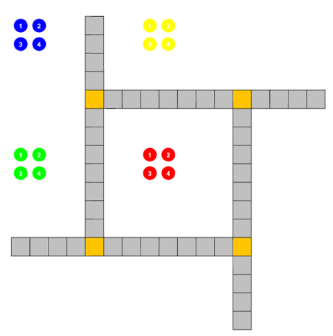

Technical Skills
Programming Languages
HTML, CSS, PHP, JavaScript, Java, Python, C, C#, C++, Prolog, Lisp, R
Tools & Technologies
GitHub, PyCharm, IntelliJ, MySQL, Canva, Microsoft Office Suite, Google Workspace, Excel (CSV files), Windsurf Codeium, Shell-Scripting, Command Line Interface
Project-Specific Skills
Web Development, Object-Oriented Design, Data Structures, Test-Driven Development, Multi-threading, Version Control System, Functional & Logical Programming
Technical Projects
Personal Website
Independently creating a website to act as a personal portfolio, highlighting my skills, qualifications, values and goals.
Ludo Board Game Development
- Collaboratively developed a board game in Java with a comprehensive and visually pleasing GUI using Swing, utilizing complex data structures like linked lists, recursion, and nodes for managing game states, which required object-oriented programming and problem-solving abilities.
- Followed test-driven development to ensure reliable performance, embodying a commitment to quality and continuous improvement.
- Received a bonus of 3% to final grade for exceeding expectations.
Transport Management System
- Programmed a UAE Transport Management System with over 600 lines of Python code, implementing a menu-driven interface for real-time transport scheduling.
- Integrated Python with MySQL to manage dynamic data effectively, displaying ownership and accountability by independently handling the system's design, coding, and debugging.
Professional Experience

Workshop and Camp Outreach Instructor
This summer, I had the profound opportunity to serve as a Workshop and Camp Outreach Instructor with Actua, journeying through some of Canada's most remote and awe-inspiring regions. From the northern expanses of Iqaluit, Arctic Bay, Resolute Bay, Grise Fiord, and Pond Inlet in Nunavut, to the vibrant communities of Ulukhaktok, Sachs Harbour, Paulatuk, Tuktoyaktuk, Aklavik, and Inuvik in the Northwest Territories, my experience was both enriching and enlightening.
In my role, I delivered engaging STEM workshops in schools and facilitated dynamic summer camps for children aged 5-12. The enthusiasm and curiosity of the young participants were incredibly rewarding, and it was a privilege to contribute to their learning and growth.
Beyond my work, I had the honor of connecting with local elders and community members, deepening my understanding of their rich cultural heritage and contemporary challenges. I also had the opportunity to explore traditional foods, such as candied fish, pipsi (smoked fish), maktak (beluga whale meat), caribou stew, bannock, and Uqsuk (whale oil), which offered a window into the cultural practices of the North.
View on LinkedInCommunity Engagement and Leadership
Co-Chair of UPEI MUN (Model United Nations)
Co-chairing the International Press (IP) Delegation of the MUN, mentoring journalists and content creators and evaluating their performance based on set criteria.
New Student Orientation (NSO) Leader
Guided new students through orientation activities and coordinated event logistics, helping create a welcoming campus experience.
Volunteer Tutor
Provided basic Math and life skills tutoring to specially-abled children, enhancing community engagement and inclusivity.
President of Activities
Led cultural and educational events, such as assemblies and workshops, demonstrating leadership and organizational skills.
Licenses & Certifications
| Certification | Issuer | Date | Skills |
|---|---|---|---|
| Agile Scrum Master | SkillUp Online | Issued Feb 2025 | Agile Methodologies and Scrum |
| Magnet Witness: evolving video acquisition and analysis [ET] | Magnet Forensics | Issued Feb 2025 | Digital Forensics · Video Analysis |
| Food Handler Cards | Probe It Food Safety America | Issued May 2024 · Expires May 2029 | Food Safety |
| Indigenous Cultural Competence and Humility | The IRG | Issued May 2024 | Indigenous Culture |
| Abuse Prevention Certificate | Plan to Protect | Issued Apr 2024 | |
| Adult and Pediatric First Aid/CPR/AED | St. John Ambulance Canada | Ambulance Saint-Jean | Issued Apr 2024 · Expires Apr 2027 | Adult CPR · Pediatric CPR · First Aid · Automated External Defibrillator (AED) |
| Occupational Health and Safety Awareness Training for Workers (Ontario) | Citation Canada (formerly HRdownloads) | Issued Apr 2024 | Health & Safety |
| WHMIS 2015 | Citation Canada (formerly HRdownloads) | Issued Apr 2024 | Workplace Hazard Control |
| Vulnerable Sector Police Check Certificate | Charlottetown Police Department | Issued Mar 2024 | |
| IELTS Academic 8.5 | IELTS Official | Issued Aug 2022 · Expired Aug 2024 |